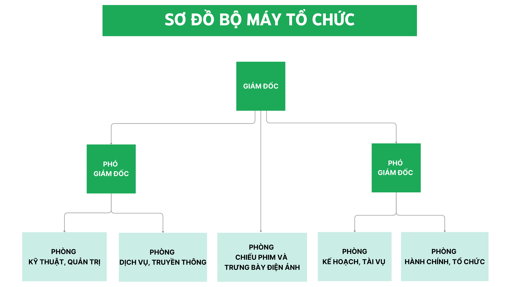
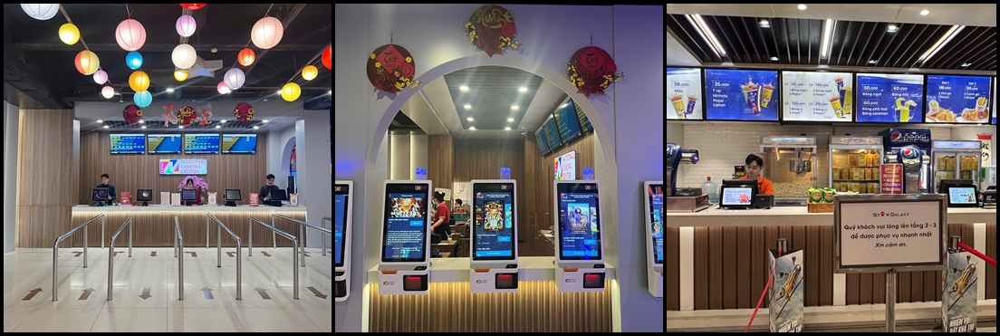
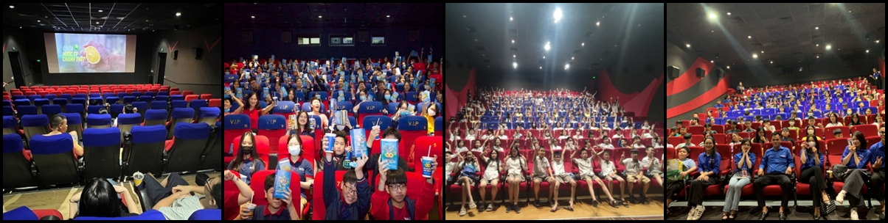
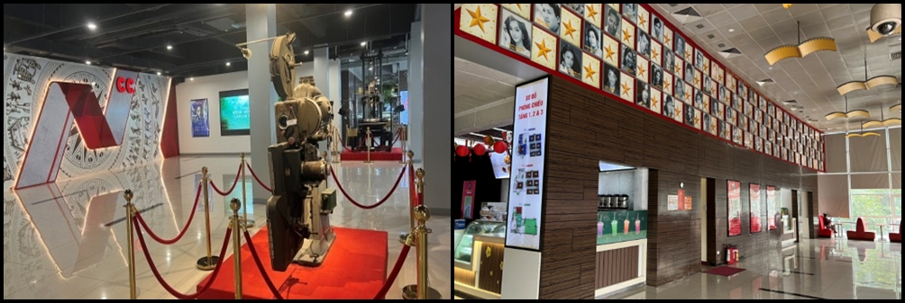
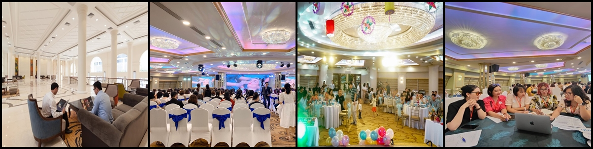
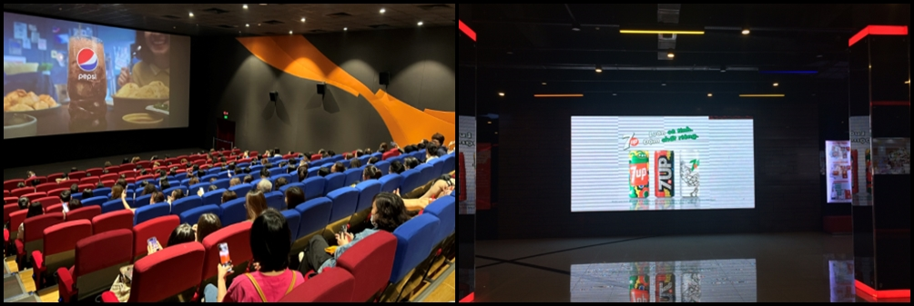
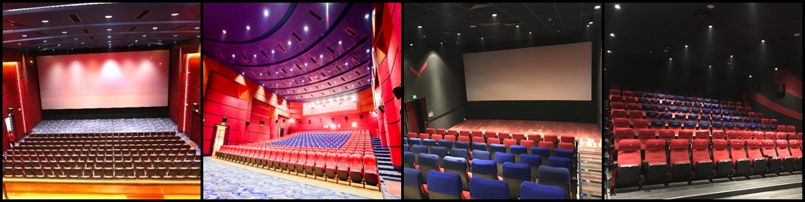

Trung tâm Chiếu phim Quốc gia (tên giao dịch quốc tế là National
Cinema Center) là đơn vị sự nghiệp công lập, trực thuộc Bộ Văn hóa,
Thể thao và Du lịch, có chức năng tổ chức chiếu phim phục vụ các
nhiệm vụ chính trị, xã hội, hợp tác quốc tế; trưng bày điện ảnh;
điều tra xã hội học về nhu cầu khán giả để phục vụ cho công tác định
hướng phát triển ngành điện ảnh.
Ngày thành lập: 29/12/1997
Trụ sở: 87 Láng Hạ, Phường Ô Chợ Dừa, Thành phố Hà Nội.
Website: www.chieuphimquocgia.com.vn
Email: pdichvuncc@gmail.com
Số điện thoại: 024.3514 1791 / 024.3514 8647
Bộ Máy Tổ Chức Của Trung Tâm Chiếu Phim Quốc Gia

Trung tâm Chiếu phim Quốc gia là một địa chỉ quen thuộc và yêu mến
đối với những người yêu điện ảnh Thủ đô và cả nước, là điểm đến giải
trí cực kỳ hấp dẫn dành cho mọi lứa tuổi với nhiều hoạt động dịch vụ
đa dạng.
1. Hoạt động điện ảnh:
- Chiếu phim phục vụ các nhiệm vụ chính trị, xã hội.
- Tổ chức, thực hiện Liên hoan phim, Tuần lễ phim trong nước,
Khu vực và Quốc tế.
- Chiếu phim phục vụ khán giả.


- Phát hành và phổ biến phim bao gồm cả phim sử dụng ngân sách
Nhà nước.
- Trưng bày điện ảnh.

2. Hoạt động biểu diễn nghệ thuật, ca nhạc tạp kỹ:
3. Dịch vụ khác:
- Tổ chức sự kiện (Sự kiện, hội nghị hội thảo, ra mắt phim...).

- Vui chơi giải trí.
- Ẩm thực.
- Quảng cáo thương mại.

Trung tâm Chiếu phim Quốc gia rất hân hạnh được đón tiếp và phục vụ
quý khách hàng.
Khu chiếu phim 3 tầng với 14 phòng chiếu, âm thanh, ánh sáng
chất lượng cao, Trung tâm Chiếu phim Quốc gia trình chiếu được
các thể loại phim: 2D, 3D, không gian rộng rãi, bắt mắt. Các
phòng chiếu phim của Trung tâm có tổng cộng 2.365 chỗ ngồi với
hơn 60 suất chiếu/ ngày. Phòng lớn nhất 402 chỗ, phòng nhỏ nhất
98 chỗ.
Hàng năm, Trung tâm Chiếu phim Quốc gia được đón tiếp nhiều đoàn
khách tập thể đến xem phim từ các Trường Mẫu giáo, Tiểu học,
THCS, THPT, đơn vị, công ty . . . quy mô phục vụ lên tới hơn
2000 khách/lượt. Các đối tác thân thiết của Trung tâm xem phim
thường xuyên tại đây như trường Tiểu học Đoàn Thị Điểm, trường
THCS Đoàn Thị Điểm, trường liên cấp Vinschool, trường Tiểu học
Newton Goldmark, trường Tiểu học I-sắc Niu-tơn...

Khu trưng bày điện ảnh – Biểu diễn nghệ thuật – Tổ chức sự kiện
là khối nhà 5 tầng, mặt tiền nằm phía đường Láng Hạ. Tầng 1, 3,
4 có khả năng phục vụ lên tới hơn 1000 chỗ là nơi chuyên tổ chức
các sự kiện, hội nghị, hội thảo, họp báo, tiệc cưới, tri ân
khách hàng, sinh nhật... Tầng 2 Nhà hát với sức chứa hơn 300 chỗ
là nơi khán giả có thể thưởng thức các chương trình nghệ thuật
tạp kỹ đặc sắc và các sự kiện, hội nghị, họp báo... Vào ngày
20/5/2025, Nhà hát chính thức ra mắt với tên gọi mới Nhà hát
Ngôi sao, đánh dấu mốc 10 năm thành lập Nhà hát.